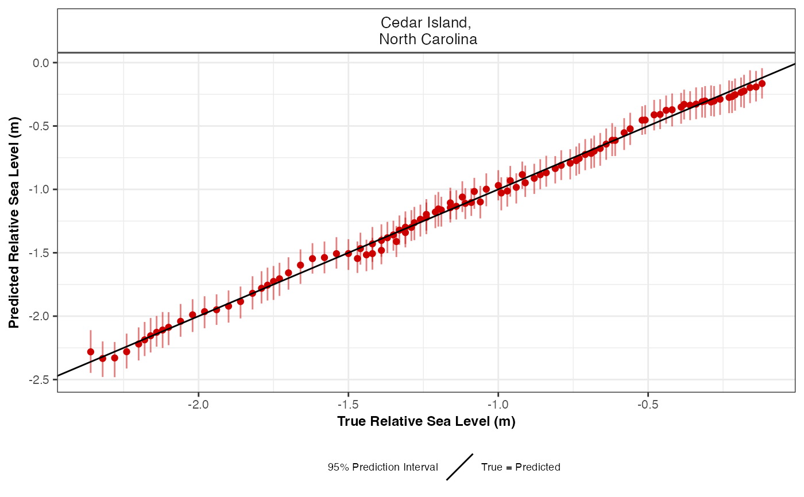

R/cross_val_check.R
cross_val_check.RdCross validation check for spline in time, spline in space time and GAM in order to select the most appropriate number of knots when creating basis functions.
cross_val_check(
data,
prediction_grid_res = 50,
spline_nseg = NULL,
spline_nseg_t = 20,
spline_nseg_st = 6,
n_iterations = 1000,
n_burnin = 100,
n_thin = 5,
n_chains = 2,
model_type,
n_fold = 5,
seed = NULL,
CI = 0.95
)Raw input data
Resolution of grid. Predictions over every 50 years(default) can vary based on user preference, as larger values will reduce computational run time.
This setting is focused on the Noisy Input Spline model. It provides the number of segments used to create basis functions.
This setting is focused on the Noisy Input Generalised Additive Model. It provides the number of segments used to create basis functions.
This setting is focused on the Noisy Input Generalised Additive Model. It provides the number of segments used to create basis functions.
Number of iterations. Increasing this value will increase the computational run time.
Size of burn-in. This number removes a certain number of samples at the beginning.
Amount of thinning.
Number of MCMC chains. The number of times the model will be run.
The user selects their statistical model type. The user can select a Noisy Input Spline in Time using "ni_spline_t". The user can select a Noisy Input Spline in Space Time using "ni_spline_st". The user can select a Noisy Input Generalised Additive Model using "ni_gam_decomp".
Number of folds required in the cross validation. The default is 5 fold cross validation.
If the user wants reproducible results, seed stores the output when random selection was used in the creation of the cross validation.
Size of the credible interval required by the user. The default is 0.95 corresponding to 95%.
A list containing the model comparison measures, e.g. Root Mean Square Error (RMSE), and plot of true vs predicted values
# \donttest{
data <- NAACproxydata %>% dplyr::filter(Site == "Cedar Island")
cross_val_check(data = data, model_type = "ni_spline_t",n_fold = 2)
#> module glm loaded
#> Compiling model graph
#> Resolving undeclared variables
#> Allocating nodes
#> Graph information:
#> Observed stochastic nodes: 52
#> Unobserved stochastic nodes: 15
#> Total graph size: 915
#>
#> Initializing model
#>
#> Compiling model graph
#> Resolving undeclared variables
#> Allocating nodes
#> Graph information:
#> Observed stochastic nodes: 52
#> Unobserved stochastic nodes: 122
#> Total graph size: 5494
#>
#> Initializing model
#>
#> No convergence issues detected.
#> Compiling model graph
#> Resolving undeclared variables
#> Allocating nodes
#> Graph information:
#> Observed stochastic nodes: 52
#> Unobserved stochastic nodes: 15
#> Total graph size: 915
#>
#> Initializing model
#>
#> Compiling model graph
#> Resolving undeclared variables
#> Allocating nodes
#> Graph information:
#> Observed stochastic nodes: 52
#> Unobserved stochastic nodes: 123
#> Total graph size: 5528
#>
#> Initializing model
#>
#> No convergence issues detected.
#> $ME_MAE_RSME_fold_site
#> # A tibble: 2 × 5
#> SiteName CV_fold_number RSME MAE ME
#> <fct> <fct> <dbl> <dbl> <dbl>
#> 1 "Cedar Island,\n North Carolina" 1 0.0475 0.0324 0.00659
#> 2 "Cedar Island,\n North Carolina" 2 0.0455 0.0306 -0.00631
#>
#> $ME_MAE_RSME_site
#> # A tibble: 1 × 4
#> SiteName RSME MAE ME
#> <fct> <dbl> <dbl> <dbl>
#> 1 "Cedar Island,\n North Carolina" 0.00139 0.0315 0.000136
#>
#> $ME_MAE_RSME_overall
#> RSME MAE ME
#> 1 0.001389434 0.03152588 0.0001362453
#>
#> $ME_MAE_RSME_fold
#> # A tibble: 2 × 4
#> CV_fold_number RSME MAE ME
#> <fct> <dbl> <dbl> <dbl>
#> 1 1 0.0475 0.0324 0.00659
#> 2 2 0.0455 0.0306 -0.00631
#>
#> $true_pred_plot

#>
#> $CV_model_df
#> Longitude Latitude SiteName data_type_id Age
#> 1 -76.38 34.971 Cedar Island,\n North Carolina ProxyRecord -800
#> 2 -76.38 34.971 Cedar Island,\n North Carolina ProxyRecord -525
#> 3 -76.38 34.971 Cedar Island,\n North Carolina ProxyRecord -211
#> 4 -76.38 34.971 Cedar Island,\n North Carolina ProxyRecord -143
#> 5 -76.38 34.971 Cedar Island,\n North Carolina ProxyRecord -112
#> 6 -76.38 34.971 Cedar Island,\n North Carolina ProxyRecord -50
#> 7 -76.38 34.971 Cedar Island,\n North Carolina ProxyRecord 73
#> 8 -76.38 34.971 Cedar Island,\n North Carolina ProxyRecord 153
#> 9 -76.38 34.971 Cedar Island,\n North Carolina ProxyRecord 346
#> 10 -76.38 34.971 Cedar Island,\n North Carolina ProxyRecord 434
#> 11 -76.38 34.971 Cedar Island,\n North Carolina ProxyRecord 586
#> 12 -76.38 34.971 Cedar Island,\n North Carolina ProxyRecord 623
#> 13 -76.38 34.971 Cedar Island,\n North Carolina ProxyRecord 625
#> 14 -76.38 34.971 Cedar Island,\n North Carolina ProxyRecord 659
#> 15 -76.38 34.971 Cedar Island,\n North Carolina ProxyRecord 672
#> 16 -76.38 34.971 Cedar Island,\n North Carolina ProxyRecord 725
#> 17 -76.38 34.971 Cedar Island,\n North Carolina ProxyRecord 745
#> 18 -76.38 34.971 Cedar Island,\n North Carolina ProxyRecord 763
#> 19 -76.38 34.971 Cedar Island,\n North Carolina ProxyRecord 818
#> 20 -76.38 34.971 Cedar Island,\n North Carolina ProxyRecord 895
#> 21 -76.38 34.971 Cedar Island,\n North Carolina ProxyRecord 941
#> 22 -76.38 34.971 Cedar Island,\n North Carolina ProxyRecord 983
#> 23 -76.38 34.971 Cedar Island,\n North Carolina ProxyRecord 1002
#> 24 -76.38 34.971 Cedar Island,\n North Carolina ProxyRecord 1038
#> 25 -76.38 34.971 Cedar Island,\n North Carolina ProxyRecord 1057
#> 26 -76.38 34.971 Cedar Island,\n North Carolina ProxyRecord 1159
#> 27 -76.38 34.971 Cedar Island,\n North Carolina ProxyRecord 1340
#> 28 -76.38 34.971 Cedar Island,\n North Carolina ProxyRecord 1354
#> 29 -76.38 34.971 Cedar Island,\n North Carolina ProxyRecord 1389
#> 30 -76.38 34.971 Cedar Island,\n North Carolina ProxyRecord 1436
#> 31 -76.38 34.971 Cedar Island,\n North Carolina ProxyRecord 1468
#> 32 -76.38 34.971 Cedar Island,\n North Carolina ProxyRecord 1490
#> 33 -76.38 34.971 Cedar Island,\n North Carolina ProxyRecord 1525
#> 34 -76.38 34.971 Cedar Island,\n North Carolina ProxyRecord 1570
#> 35 -76.38 34.971 Cedar Island,\n North Carolina ProxyRecord 1590
#> 36 -76.38 34.971 Cedar Island,\n North Carolina ProxyRecord 1603
#> 37 -76.38 34.971 Cedar Island,\n North Carolina ProxyRecord 1644
#> 38 -76.38 34.971 Cedar Island,\n North Carolina ProxyRecord 1736
#> 39 -76.38 34.971 Cedar Island,\n North Carolina ProxyRecord 1846
#> 40 -76.38 34.971 Cedar Island,\n North Carolina ProxyRecord 1874
#> 41 -76.38 34.971 Cedar Island,\n North Carolina ProxyRecord 1898
#> 42 -76.38 34.971 Cedar Island,\n North Carolina ProxyRecord 1910
#> 43 -76.38 34.971 Cedar Island,\n North Carolina ProxyRecord 1918
#> 44 -76.38 34.971 Cedar Island,\n North Carolina ProxyRecord 1923
#> 45 -76.38 34.971 Cedar Island,\n North Carolina ProxyRecord 1934
#> 46 -76.38 34.971 Cedar Island,\n North Carolina ProxyRecord 1937
#> 47 -76.38 34.971 Cedar Island,\n North Carolina ProxyRecord 1951
#> 48 -76.38 34.971 Cedar Island,\n North Carolina ProxyRecord 1957
#> 49 -76.38 34.971 Cedar Island,\n North Carolina ProxyRecord 1963
#> 50 -76.38 34.971 Cedar Island,\n North Carolina ProxyRecord 1974
#> 51 -76.38 34.971 Cedar Island,\n North Carolina ProxyRecord 1979
#> 52 -76.38 34.971 Cedar Island,\n North Carolina ProxyRecord 1996
#> 53 -76.38 34.971 Cedar Island,\n North Carolina ProxyRecord -731
#> 54 -76.38 34.971 Cedar Island,\n North Carolina ProxyRecord -661
#> 55 -76.38 34.971 Cedar Island,\n North Carolina ProxyRecord -333
#> 56 -76.38 34.971 Cedar Island,\n North Carolina ProxyRecord -270
#> 57 -76.38 34.971 Cedar Island,\n North Carolina ProxyRecord -174
#> 58 -76.38 34.971 Cedar Island,\n North Carolina ProxyRecord 15
#> 59 -76.38 34.971 Cedar Island,\n North Carolina ProxyRecord 46
#> 60 -76.38 34.971 Cedar Island,\n North Carolina ProxyRecord 100
#> 61 -76.38 34.971 Cedar Island,\n North Carolina ProxyRecord 229
#> 62 -76.38 34.971 Cedar Island,\n North Carolina ProxyRecord 278
#> 63 -76.38 34.971 Cedar Island,\n North Carolina ProxyRecord 312
#> 64 -76.38 34.971 Cedar Island,\n North Carolina ProxyRecord 381
#> 65 -76.38 34.971 Cedar Island,\n North Carolina ProxyRecord 505
#> 66 -76.38 34.971 Cedar Island,\n North Carolina ProxyRecord 568
#> 67 -76.38 34.971 Cedar Island,\n North Carolina ProxyRecord 572
#> 68 -76.38 34.971 Cedar Island,\n North Carolina ProxyRecord 604
#> 69 -76.38 34.971 Cedar Island,\n North Carolina ProxyRecord 605
#> 70 -76.38 34.971 Cedar Island,\n North Carolina ProxyRecord 789
#> 71 -76.38 34.971 Cedar Island,\n North Carolina ProxyRecord 825
#> 72 -76.38 34.971 Cedar Island,\n North Carolina ProxyRecord 860
#> 73 -76.38 34.971 Cedar Island,\n North Carolina ProxyRecord 883
#> 74 -76.38 34.971 Cedar Island,\n North Carolina ProxyRecord 1068
#> 75 -76.38 34.971 Cedar Island,\n North Carolina ProxyRecord 1082
#> 76 -76.38 34.971 Cedar Island,\n North Carolina ProxyRecord 1093
#> 77 -76.38 34.971 Cedar Island,\n North Carolina ProxyRecord 1121
#> 78 -76.38 34.971 Cedar Island,\n North Carolina ProxyRecord 1146
#> 79 -76.38 34.971 Cedar Island,\n North Carolina ProxyRecord 1155
#> 80 -76.38 34.971 Cedar Island,\n North Carolina ProxyRecord 1178
#> 81 -76.38 34.971 Cedar Island,\n North Carolina ProxyRecord 1219
#> 82 -76.38 34.971 Cedar Island,\n North Carolina ProxyRecord 1267
#> 83 -76.38 34.971 Cedar Island,\n North Carolina ProxyRecord 1287
#> 84 -76.38 34.971 Cedar Island,\n North Carolina ProxyRecord 1295
#> 85 -76.38 34.971 Cedar Island,\n North Carolina ProxyRecord 1322
#> 86 -76.38 34.971 Cedar Island,\n North Carolina ProxyRecord 1408
#> 87 -76.38 34.971 Cedar Island,\n North Carolina ProxyRecord 1460
#> 88 -76.38 34.971 Cedar Island,\n North Carolina ProxyRecord 1543
#> 89 -76.38 34.971 Cedar Island,\n North Carolina ProxyRecord 1626
#> 90 -76.38 34.971 Cedar Island,\n North Carolina ProxyRecord 1653
#> 91 -76.38 34.971 Cedar Island,\n North Carolina ProxyRecord 1669
#> 92 -76.38 34.971 Cedar Island,\n North Carolina ProxyRecord 1697
#> 93 -76.38 34.971 Cedar Island,\n North Carolina ProxyRecord 1725
#> 94 -76.38 34.971 Cedar Island,\n North Carolina ProxyRecord 1768
#> 95 -76.38 34.971 Cedar Island,\n North Carolina ProxyRecord 1790
#> 96 -76.38 34.971 Cedar Island,\n North Carolina ProxyRecord 1840
#> 97 -76.38 34.971 Cedar Island,\n North Carolina ProxyRecord 1864
#> 98 -76.38 34.971 Cedar Island,\n North Carolina ProxyRecord 1885
#> 99 -76.38 34.971 Cedar Island,\n North Carolina ProxyRecord 1913
#> 100 -76.38 34.971 Cedar Island,\n North Carolina ProxyRecord 1927
#> 101 -76.38 34.971 Cedar Island,\n North Carolina ProxyRecord 1930
#> 102 -76.38 34.971 Cedar Island,\n North Carolina ProxyRecord 1941
#> 103 -76.38 34.971 Cedar Island,\n North Carolina ProxyRecord 1988
#> 104 -76.38 34.971 Cedar Island,\n North Carolina ProxyRecord 2005
#> true_RSL Age_err RSL_err CV_fold test_set NI_var_grid_term pred_RSL
#> 1 -2.36 65.25 0.06 1 test_set 0.0003571693 -2.2791044
#> 2 -2.24 65.00 0.06 1 test_set 0.0005890928 -2.2862408
#> 3 -2.16 40.25 0.06 1 test_set 0.0013405191 -2.1514907
#> 4 -2.12 44.00 0.06 1 test_set 0.0014536821 -2.1082121
#> 5 -2.10 42.50 0.06 1 test_set 0.0014994151 -2.0872624
#> 6 -2.06 41.00 0.06 1 test_set 0.0015798785 -2.0433980
#> 7 -1.94 35.50 0.06 1 test_set 0.0016960876 -1.9503502
#> 8 -1.86 55.50 0.06 1 test_set 0.0017406824 -1.8870440
#> 9 -1.75 79.50 0.06 1 test_set 0.0017858225 -1.7313802
#> 10 -1.70 75.25 0.06 1 test_set 0.0017933196 -1.6600933
#> 11 -1.58 26.25 0.06 1 test_set 0.0017877034 -1.5377268
#> 12 -1.50 15.25 0.06 1 test_set 0.0017827774 -1.5082364
#> 13 -1.42 62.25 0.06 1 test_set 0.0017824714 -1.5066468
#> 14 -1.39 60.25 0.06 1 test_set 0.0017766471 -1.4797000
#> 15 -1.46 36.75 0.06 1 test_set 0.0017741091 -1.4694374
#> 16 -1.42 41.25 0.06 1 test_set 0.0017619820 -1.4278575
#> 17 -1.34 60.75 0.06 1 test_set 0.0017566627 -1.4122851
#> 18 -1.39 43.75 0.06 1 test_set 0.0017515272 -1.3983300
#> 19 -1.35 45.00 0.06 1 test_set 0.0017337921 -1.3560712
#> 20 -1.31 49.00 0.06 1 test_set 0.0017037902 -1.2979930
#> 21 -1.28 51.50 0.06 1 test_set 0.0016829874 -1.2639781
#> 22 -1.26 62.25 0.06 1 test_set 0.0016621127 -1.2334130
#> 23 -1.24 50.50 0.06 1 test_set 0.0016520795 -1.2197499
#> 24 -1.24 61.00 0.06 1 test_set 0.0016320615 -1.1941566
#> 25 -1.21 56.75 0.06 1 test_set 0.0016209646 -1.1808105
#> 26 -1.09 36.50 0.06 1 test_set 0.0015744411 -1.1110105
#> 27 -0.94 39.75 0.06 1 test_set 0.0016829180 -0.9864388
#> 28 -1.00 20.25 0.06 1 test_set 0.0017020338 -0.9762379
#> 29 -0.91 31.00 0.06 1 test_set 0.0017565609 -0.9501224
#> 30 -0.88 30.50 0.06 1 test_set 0.0018449242 -0.9134322
#> 31 -0.92 120.50 0.06 1 test_set 0.0019150182 -0.8871999
#> 32 -0.84 25.50 0.06 1 test_set 0.0019678751 -0.8684984
#> 33 -0.81 26.00 0.06 1 test_set 0.0020598033 -0.8375099
#> 34 -0.76 24.25 0.06 1 test_set 0.0021921399 -0.7951969
#> 35 -0.74 23.25 0.06 1 test_set 0.0022560635 -0.7754138
#> 36 -0.73 23.50 0.06 1 test_set 0.0022992993 -0.7622103
#> 37 -0.69 29.00 0.06 1 test_set 0.0024443562 -0.7186840
#> 38 -0.61 23.75 0.06 1 test_set 0.0028179212 -0.6094291
#> 39 -0.51 14.75 0.06 1 test_set 0.0033518704 -0.4542242
#> 40 -0.46 12.75 0.06 1 test_set 0.0035029651 -0.4098623
#> 41 -0.42 6.75 0.06 1 test_set 0.0036373779 -0.3701374
#> 42 -0.39 5.25 0.06 1 test_set 0.0037062815 -0.3496682
#> 43 -0.36 7.00 0.06 1 test_set 0.0037528458 -0.3357927
#> 44 -0.34 7.50 0.06 1 test_set 0.0037822039 -0.3270263
#> 45 -0.29 8.00 0.06 1 test_set 0.0038474831 -0.3074824
#> 46 -0.28 8.00 0.06 1 test_set 0.0038654515 -0.3020901
#> 47 -0.23 7.75 0.06 1 test_set 0.0039502391 -0.2765703
#> 48 -0.22 7.00 0.06 1 test_set 0.0039870481 -0.2654519
#> 49 -0.21 5.50 0.06 1 test_set 0.0040241400 -0.2542234
#> 50 -0.19 5.50 0.06 1 test_set 0.0040928764 -0.2333494
#> 51 -0.18 5.75 0.06 1 test_set 0.0041244346 -0.2237365
#> 52 -0.14 2.00 0.06 1 test_set 0.0042332015 -0.1904623
#> 53 -2.32 36.25 0.06 2 test_set 0.0001820923 -2.3331418
#> 54 -2.28 47.75 0.06 2 test_set 0.0003701620 -2.3305787
#> 55 -2.20 35.00 0.06 2 test_set 0.0010687807 -2.2222891
#> 56 -2.18 26.25 0.06 2 test_set 0.0011685068 -2.1869253
#> 57 -2.14 46.00 0.06 2 test_set 0.0012991169 -2.1263714
#> 58 -2.02 27.50 0.06 2 test_set 0.0014809023 -1.9895797
#> 59 -1.98 33.00 0.06 2 test_set 0.0015011782 -1.9656014
#> 60 -1.90 37.25 0.06 2 test_set 0.0015300765 -1.9231942
#> 61 -1.82 74.50 0.06 2 test_set 0.0015741722 -1.8199964
#> 62 -1.79 78.50 0.06 2 test_set 0.0015858813 -1.7803894
#> 63 -1.77 79.75 0.06 2 test_set 0.0015924832 -1.7528273
#> 64 -1.73 78.50 0.06 2 test_set 0.0016020464 -1.6967846
#> 65 -1.66 64.75 0.06 2 test_set 0.0016063191 -1.5961727
#> 66 -1.62 32.25 0.06 2 test_set 0.0016021331 -1.5453647
#> 67 -1.47 61.00 0.06 2 test_set 0.0016017227 -1.5421502
#> 68 -1.54 18.50 0.06 2 test_set 0.0015978179 -1.5164933
#> 69 -1.44 62.25 0.06 2 test_set 0.0015976781 -1.5156933
#> 70 -1.37 44.75 0.06 2 test_set 0.0015535822 -1.3709786
#> 71 -1.31 65.50 0.06 2 test_set 0.0015406812 -1.3433927
#> 72 -1.33 44.75 0.06 2 test_set 0.0015267977 -1.3168558
#> 73 -1.29 65.75 0.06 2 test_set 0.0015169545 -1.2995799
#> 74 -1.19 53.75 0.06 2 test_set 0.0014170805 -1.1661118
#> 75 -1.20 40.25 0.06 2 test_set 0.0014092291 -1.1564582
#> 76 -1.16 45.50 0.06 2 test_set 0.0014039963 -1.1489128
#> 77 -1.14 38.75 0.06 2 test_set 0.0013943937 -1.1298289
#> 78 -1.11 36.50 0.06 2 test_set 0.0013903305 -1.1128864
#> 79 -1.16 43.75 0.06 2 test_set 0.0013899094 -1.1067979
#> 80 -1.06 36.00 0.06 2 test_set 0.0013913388 -1.0912389
#> 81 -1.12 39.50 0.06 2 test_set 0.0014028193 -1.0633879
#> 82 -0.99 44.25 0.06 2 test_set 0.0014308025 -1.0303028
#> 83 -1.08 19.75 0.06 2 test_set 0.0014470918 -1.0162746
#> 84 -0.97 42.00 0.06 2 test_set 0.0014543701 -1.0106129
#> 85 -1.04 17.75 0.06 2 test_set 0.0014821512 -0.9912606
#> 86 -0.96 85.75 0.06 2 test_set 0.0016037207 -0.9263931
#> 87 -0.86 27.25 0.06 2 test_set 0.0017016561 -0.8840668
#> 88 -0.79 25.25 0.06 2 test_set 0.0018961197 -0.8101520
#> 89 -0.71 26.00 0.06 2 test_set 0.0021374860 -0.7265925
#> 90 -0.68 29.50 0.06 2 test_set 0.0022261130 -0.6969823
#> 91 -0.66 30.50 0.06 2 test_set 0.0022809748 -0.6788203
#> 92 -0.64 26.25 0.06 2 test_set 0.0023811770 -0.6458815
#> 93 -0.62 24.75 0.06 2 test_set 0.0024867168 -0.6114039
#> 94 -0.58 19.50 0.06 2 test_set 0.0026591887 -0.5552757
#> 95 -0.56 16.50 0.06 2 test_set 0.0027522981 -0.5249882
#> 96 -0.52 14.00 0.06 2 test_set 0.0029761654 -0.4519465
#> 97 -0.48 14.00 0.06 2 test_set 0.0030896675 -0.4147074
#> 98 -0.44 10.25 0.06 2 test_set 0.0031921988 -0.3809091
#> 99 -0.38 5.75 0.06 2 test_set 0.0033335776 -0.3340209
#> 100 -0.32 8.00 0.06 2 test_set 0.0034062687 -0.3097726
#> 101 -0.31 8.25 0.06 2 test_set 0.0034220190 -0.3045054
#> 102 -0.26 7.75 0.06 2 test_set 0.0034802942 -0.2849748
#> 103 -0.16 5.00 0.06 2 test_set 0.0037385682 -0.1975752
#> 104 -0.12 2.25 0.06 2 test_set 0.0038348748 -0.1643377
#> upr lwr y_post_pred upr_PI lwr_PI CI CV_fold_number
#> 1 -2.4096860 -2.1371399 -2.2814866 -2.4473906 -2.11040830 95% 1
#> 2 -2.3569956 -2.2253276 -2.2805621 -2.4129695 -2.13778819 95% 1
#> 3 -2.2114933 -2.0929304 -2.1546648 -2.2865293 -2.01458426 95% 1
#> 4 -2.1605108 -2.0563245 -2.1094720 -2.2506997 -1.96735569 95% 1
#> 5 -2.1351280 -2.0376837 -2.0877757 -2.2288432 -1.96827313 95% 1
#> 6 -2.0852776 -1.9998999 -2.0408590 -2.1624514 -1.90381640 95% 1
#> 7 -1.9855172 -1.9130526 -1.9494382 -2.0687959 -1.82780126 95% 1
#> 8 -1.9225775 -1.8504267 -1.8847475 -2.0178147 -1.76633723 95% 1
#> 9 -1.7669936 -1.6932787 -1.7261462 -1.8718340 -1.60416720 95% 1
#> 10 -1.6952622 -1.6236848 -1.6581827 -1.7910730 -1.53549578 95% 1
#> 11 -1.5698251 -1.5066002 -1.5377182 -1.6623038 -1.41098435 95% 1
#> 12 -1.5400449 -1.4795029 -1.5060085 -1.6355302 -1.39302393 95% 1
#> 13 -1.5384184 -1.4780543 -1.5066954 -1.6331298 -1.38254414 95% 1
#> 14 -1.5107333 -1.4522072 -1.4810817 -1.5908997 -1.36552272 95% 1
#> 15 -1.5007179 -1.4417987 -1.4672415 -1.5936990 -1.34157462 95% 1
#> 16 -1.4587977 -1.3988563 -1.4294920 -1.5720633 -1.29651118 95% 1
#> 17 -1.4426706 -1.3843278 -1.4115577 -1.5336768 -1.28869169 95% 1
#> 18 -1.4288433 -1.3699443 -1.4027657 -1.5313963 -1.27552557 95% 1
#> 19 -1.3884033 -1.3255925 -1.3592747 -1.4835632 -1.24714327 95% 1
#> 20 -1.3309173 -1.2668703 -1.2987334 -1.4304375 -1.17366719 95% 1
#> 21 -1.2981798 -1.2323005 -1.2630596 -1.4005864 -1.13810019 95% 1
#> 22 -1.2695483 -1.2020831 -1.2361094 -1.3721436 -1.12043216 95% 1
#> 23 -1.2560618 -1.1886740 -1.2209259 -1.3533620 -1.10366113 95% 1
#> 24 -1.2291059 -1.1635015 -1.1971320 -1.3252511 -1.07697097 95% 1
#> 25 -1.2159468 -1.1505247 -1.1786479 -1.3059064 -1.04289798 95% 1
#> 26 -1.1425156 -1.0845000 -1.1032134 -1.2095579 -0.99161020 95% 1
#> 27 -1.0140590 -0.9603959 -0.9835003 -1.1112486 -0.87335710 95% 1
#> 28 -1.0040372 -0.9504931 -0.9692675 -1.0864573 -0.84867467 95% 1
#> 29 -0.9785909 -0.9231411 -0.9478694 -1.0597010 -0.81221592 95% 1
#> 30 -0.9429991 -0.8842834 -0.9125962 -1.0357602 -0.79804129 95% 1
#> 31 -0.9167023 -0.8553855 -0.8833039 -0.9962568 -0.78068753 95% 1
#> 32 -0.8990240 -0.8356034 -0.8686194 -0.9789854 -0.73472562 95% 1
#> 33 -0.8701458 -0.8040079 -0.8355075 -0.9531599 -0.73710108 95% 1
#> 34 -0.8298075 -0.7611958 -0.7934611 -0.9209722 -0.68307212 95% 1
#> 35 -0.8110361 -0.7414004 -0.7732475 -0.8916832 -0.66224149 95% 1
#> 36 -0.7982620 -0.7282106 -0.7558813 -0.8790196 -0.63573283 95% 1
#> 37 -0.7551338 -0.6849612 -0.7160083 -0.8358106 -0.59843800 95% 1
#> 38 -0.6436359 -0.5765770 -0.6135761 -0.7367816 -0.50625123 95% 1
#> 39 -0.4846858 -0.4249865 -0.4529623 -0.5652884 -0.33562264 95% 1
#> 40 -0.4423310 -0.3779086 -0.4086300 -0.5246151 -0.28924735 95% 1
#> 41 -0.4062712 -0.3378534 -0.3717838 -0.5030647 -0.24351281 95% 1
#> 42 -0.3864661 -0.3165560 -0.3510032 -0.4822122 -0.23874513 95% 1
#> 43 -0.3738458 -0.3003944 -0.3360679 -0.4540208 -0.22515486 95% 1
#> 44 -0.3657462 -0.2921206 -0.3275942 -0.4461812 -0.19540508 95% 1
#> 45 -0.3488229 -0.2719029 -0.3104597 -0.4213615 -0.17973019 95% 1
#> 46 -0.3438110 -0.2657197 -0.3029479 -0.4253103 -0.18476009 95% 1
#> 47 -0.3221554 -0.2363782 -0.2743695 -0.3987353 -0.14046204 95% 1
#> 48 -0.3133670 -0.2235553 -0.2680119 -0.3977578 -0.14506281 95% 1
#> 49 -0.3045024 -0.2105624 -0.2537432 -0.3791406 -0.12537092 95% 1
#> 50 -0.2862250 -0.1852541 -0.2351170 -0.3506991 -0.11766918 95% 1
#> 51 -0.2776699 -0.1737285 -0.2240916 -0.3581172 -0.09628643 95% 1
#> 52 -0.2483059 -0.1363671 -0.1919984 -0.3065205 -0.06560051 95% 1
#> 53 -2.4189673 -2.2501473 -2.3337457 -2.4796533 -2.19901426 95% 2
#> 54 -2.4029789 -2.2594839 -2.3295694 -2.4811852 -2.20369694 95% 2
#> 55 -2.2915540 -2.1564212 -2.2196947 -2.3493475 -2.08859539 95% 2
#> 56 -2.2513747 -2.1289043 -2.1867974 -2.3147666 -2.04582210 95% 2
#> 57 -2.1789295 -2.0761005 -2.1275459 -2.2408018 -1.99849087 95% 2
#> 58 -2.0373013 -1.9468650 -1.9893607 -2.1249487 -1.86619978 95% 2
#> 59 -2.0159390 -1.9229891 -1.9643966 -2.0954312 -1.84293084 95% 2
#> 60 -1.9742779 -1.8810281 -1.9209623 -2.0509176 -1.79717964 95% 2
#> 61 -1.8710065 -1.7711441 -1.8198672 -1.9474147 -1.68509191 95% 2
#> 62 -1.8311713 -1.7308333 -1.7802845 -1.8999075 -1.64521693 95% 2
#> 63 -1.8014215 -1.7045644 -1.7554287 -1.8767069 -1.61727807 95% 2
#> 64 -1.7430426 -1.6511093 -1.7051827 -1.8402943 -1.57911039 95% 2
#> 65 -1.6375087 -1.5571308 -1.5975009 -1.7454517 -1.47314524 95% 2
#> 66 -1.5828264 -1.5108909 -1.5462744 -1.6644678 -1.42426363 95% 2
#> 67 -1.5794165 -1.5078101 -1.5452980 -1.6591653 -1.41060733 95% 2
#> 68 -1.5527637 -1.4844072 -1.5070544 -1.6247871 -1.37698802 95% 2
#> 69 -1.5518609 -1.4836857 -1.5161528 -1.6452556 -1.39700109 95% 2
#> 70 -1.4008608 -1.3382860 -1.3815232 -1.5022324 -1.25589517 95% 2
#> 71 -1.3741121 -1.3085427 -1.3404409 -1.4576954 -1.22283142 95% 2
#> 72 -1.3506065 -1.2801164 -1.3214119 -1.4374216 -1.20555719 95% 2
#> 73 -1.3333409 -1.2617423 -1.2994931 -1.4066891 -1.16383567 95% 2
#> 74 -1.2062683 -1.1267011 -1.1624999 -1.2933186 -1.05842614 95% 2
#> 75 -1.1960211 -1.1175257 -1.1543665 -1.2932776 -1.02050372 95% 2
#> 76 -1.1879340 -1.1104173 -1.1444843 -1.2611238 -1.01339779 95% 2
#> 77 -1.1682085 -1.0926692 -1.1333449 -1.2377493 -1.00680400 95% 2
#> 78 -1.1501953 -1.0771630 -1.1105582 -1.2341452 -0.99012658 95% 2
#> 79 -1.1442038 -1.0716351 -1.1062834 -1.2350188 -0.98663027 95% 2
#> 80 -1.1287575 -1.0568275 -1.0986361 -1.2289494 -0.97240685 95% 2
#> 81 -1.1002454 -1.0287297 -1.0605370 -1.1785793 -0.93584731 95% 2
#> 82 -1.0656716 -0.9956708 -1.0284444 -1.1653922 -0.90456959 95% 2
#> 83 -1.0517418 -0.9829523 -1.0163857 -1.1533800 -0.90903687 95% 2
#> 84 -1.0457813 -0.9778558 -1.0127516 -1.1359824 -0.90238635 95% 2
#> 85 -1.0253250 -0.9604631 -0.9984767 -1.1331222 -0.87368024 95% 2
#> 86 -0.9604502 -0.8942390 -0.9311352 -1.0574411 -0.81509965 95% 2
#> 87 -0.9165749 -0.8514207 -0.8845970 -0.9988261 -0.76206193 95% 2
#> 88 -0.8426449 -0.7744160 -0.8106060 -0.9262578 -0.69133022 95% 2
#> 89 -0.7598872 -0.6901154 -0.7247777 -0.8487589 -0.60339017 95% 2
#> 90 -0.7306194 -0.6615888 -0.6984921 -0.8291005 -0.57589401 95% 2
#> 91 -0.7127363 -0.6440582 -0.6771532 -0.8136129 -0.55508339 95% 2
#> 92 -0.6799635 -0.6117935 -0.6428820 -0.7666776 -0.51942121 95% 2
#> 93 -0.6442092 -0.5784393 -0.6125178 -0.7375746 -0.47718891 95% 2
#> 94 -0.5873841 -0.5251468 -0.5532243 -0.6892196 -0.43784824 95% 2
#> 95 -0.5571754 -0.4968370 -0.5223444 -0.6497613 -0.39578309 95% 2
#> 96 -0.4841810 -0.4254295 -0.4542590 -0.5699330 -0.34414284 95% 2
#> 97 -0.4460025 -0.3888875 -0.4119838 -0.5346437 -0.29424106 95% 2
#> 98 -0.4127026 -0.3547732 -0.3762699 -0.4805964 -0.25931778 95% 2
#> 99 -0.3673486 -0.3068529 -0.3295174 -0.4488170 -0.21333688 95% 2
#> 100 -0.3432027 -0.2818745 -0.3086932 -0.4325869 -0.19469908 95% 2
#> 101 -0.3386912 -0.2763758 -0.3026956 -0.4353370 -0.18527996 95% 2
#> 102 -0.3194198 -0.2549226 -0.2886790 -0.4126687 -0.17172087 95% 2
#> 103 -0.2370671 -0.1553542 -0.1966743 -0.3196990 -0.06046403 95% 2
#> 104 -0.2095688 -0.1173687 -0.1651814 -0.2833061 -0.04362676 95% 2
#> obs_in_PI
#> 1 TRUE
#> 2 TRUE
#> 3 TRUE
#> 4 TRUE
#> 5 TRUE
#> 6 TRUE
#> 7 TRUE
#> 8 TRUE
#> 9 TRUE
#> 10 TRUE
#> 11 TRUE
#> 12 TRUE
#> 13 TRUE
#> 14 TRUE
#> 15 TRUE
#> 16 TRUE
#> 17 TRUE
#> 18 TRUE
#> 19 TRUE
#> 20 TRUE
#> 21 TRUE
#> 22 TRUE
#> 23 TRUE
#> 24 TRUE
#> 25 TRUE
#> 26 TRUE
#> 27 TRUE
#> 28 TRUE
#> 29 TRUE
#> 30 TRUE
#> 31 TRUE
#> 32 TRUE
#> 33 TRUE
#> 34 TRUE
#> 35 TRUE
#> 36 TRUE
#> 37 TRUE
#> 38 TRUE
#> 39 TRUE
#> 40 TRUE
#> 41 TRUE
#> 42 TRUE
#> 43 TRUE
#> 44 TRUE
#> 45 TRUE
#> 46 TRUE
#> 47 TRUE
#> 48 TRUE
#> 49 TRUE
#> 50 TRUE
#> 51 TRUE
#> 52 TRUE
#> 53 TRUE
#> 54 TRUE
#> 55 TRUE
#> 56 TRUE
#> 57 TRUE
#> 58 TRUE
#> 59 TRUE
#> 60 TRUE
#> 61 TRUE
#> 62 TRUE
#> 63 TRUE
#> 64 TRUE
#> 65 TRUE
#> 66 TRUE
#> 67 TRUE
#> 68 TRUE
#> 69 TRUE
#> 70 TRUE
#> 71 TRUE
#> 72 TRUE
#> 73 TRUE
#> 74 TRUE
#> 75 TRUE
#> 76 TRUE
#> 77 TRUE
#> 78 TRUE
#> 79 TRUE
#> 80 TRUE
#> 81 TRUE
#> 82 TRUE
#> 83 TRUE
#> 84 TRUE
#> 85 TRUE
#> 86 TRUE
#> 87 TRUE
#> 88 TRUE
#> 89 TRUE
#> 90 TRUE
#> 91 TRUE
#> 92 TRUE
#> 93 TRUE
#> 94 TRUE
#> 95 TRUE
#> 96 TRUE
#> 97 TRUE
#> 98 TRUE
#> 99 TRUE
#> 100 TRUE
#> 101 TRUE
#> 102 TRUE
#> 103 TRUE
#> 104 TRUE
#>
#> $total_coverage
#> [1] 1
#>
#> $prediction_interval_size
#> # A tibble: 1 × 2
#> SiteName PI_width
#> <fct> <dbl>
#> 1 "Cedar Island,\n North Carolina" -0.249
#>
#> $coverage_by_site
#> # A tibble: 1 × 2
#> SiteName coverage_by_site
#> <fct> <dbl>
#> 1 "Cedar Island,\n North Carolina" 1
#>
# }